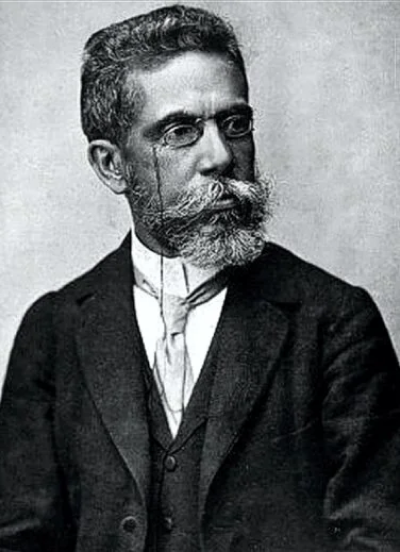

Joaquim Maria Machado de Assis

Machado de Assis (1839-1908) foi um dos maiores escritores da literatura brasileira e uma das figuras
mais influentes da literatura em língua portuguesa.
Nascido no Rio de Janeiro em 1839, em uma família de origem humilde, Machado de Assis superou
dificuldades sociais e econômicas para se tornar um dos maiores mestres da prosa brasileira.
Sua carreira literária começou com poesias, mas ele ganhou reconhecimento e notoriedade por seus
romances,
contos e peças teatrais. Suas obras são marcadas por uma profunda análise psicológica dos personagens,
ironia mordaz e uma crítica incisiva à sociedade. Entre seus trabalhos mais famosos estão "Dom
Casmurro",
"Memórias Póstumas de Brás Cubas" e "O Guarani".
Machado de Assis foi um dos fundadores da Academia Brasileira de Letras,
onde também ocupou o cargo de presidente por várias vezes. Seu estilo inovador e suas abordagens
críticas ajudaram a redefinir a literatura brasileira, fazendo dele um autor central na literatura
mundial.
Faleceu em 1908, mas seu legado literário continua a influenciar escritores e leitores até hoje.
©Todos os direitos reservados. Todos os textos, imagens, gráficos, animações, vídeos, músicas,
sons e outros materiais são protegidos por direitos autorais e outros direitos de propriedade intelectual de
Machado de Asis